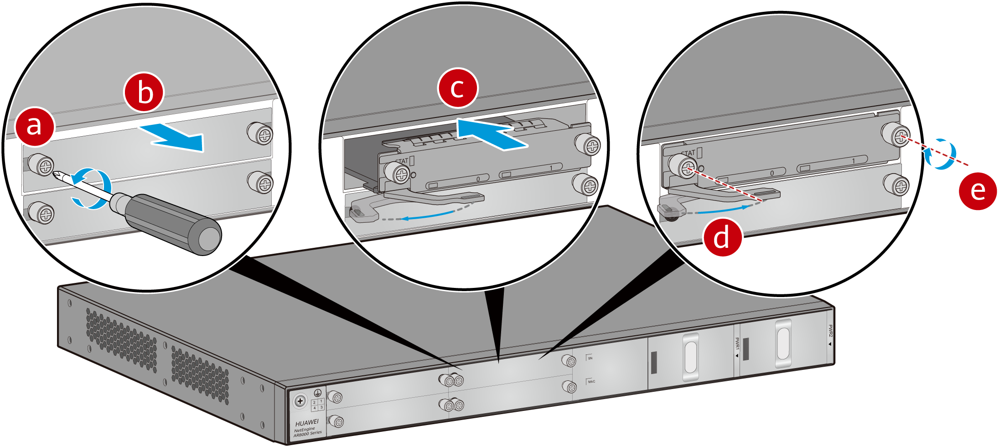
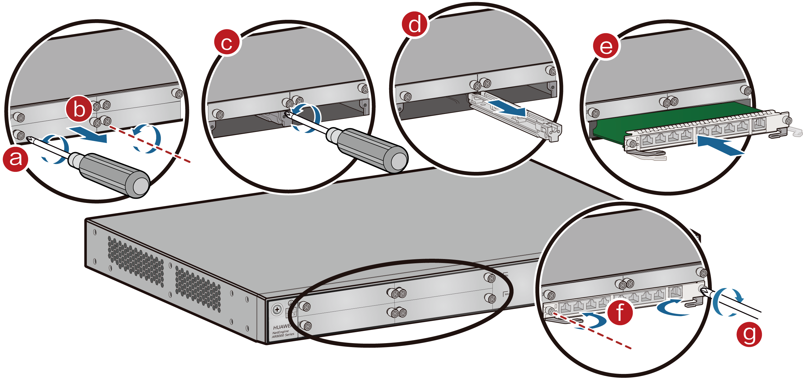

Installing a Card
Context

- All cards are hot swappable.
- Vacant slots in a router must be covered with filler panels.
- When installing a card, insert it into the slot slowly and carefully. If you encounter resistance or notice the card is misaligned, remove it and reinsert it properly. Avoid using excessive force, as this may damage the connectors on both the card and backplane.
- A card can only be installed in a router that supports this card. For details about the cards supported by different router models, see "Cards" in the Hardware Description.
Tools and Accessories
- ESD wrist strap
- Phillips screwdriver
Procedure
- Put on an ESD wrist strap. Ensure that the ESD wrist strap is grounded and in close contact with your wrist.
- Loosen the captive screw on the filler panel and remove the filler panel.
- Perform the following steps to install a card in an uncombined or combined slot:
- Installing a card in an uncombined slot:
The methods for installing SIC and WSIC cards in their respective slots are identical. The following describes the method for installing a SIC card into a SIC slot.
1. Pull the ejector lever outward and slide the card into the slot along the guide rails, until the card panel is in close contact with the device panel.
2. Push the ejector lever inward to fully seat the card in the slot, and then tighten the captive screws on both sides of the card.

- Installing a card in a combined slot:
You can combine slots on a router to create larger card slots. For example, you can combine two SIC slots into a single WSIC slot. The following illustrates installing a WSIC card by combining slot 3 and slot 4.

The guide rail between slot 3 and slot 4 can be removed independently. However, the guide rail between slot 1 and slot 2 cannot be removed separately. If you remove the guide rail between slot 1 and slot 2, the guide rail between slot 3 and slot 4 will also be removed.
When installing a WSIC card together with a SIC card, you are advised to install the SIC card in slot 1 or slot 2, and the WSIC card in the combined slot 4 (formed by combining slot 3 and slot 4).
If you need to install only a WSIC card and install it in the new slot 2 (formed by combining slot 1 and slot 2), remove all filler panels and remove the guide rail between slot 1 and slot 2. If you need to install the WSIC card in the new slot 4 (formed by combining slot 3 and slot 4), remove only the guide rail between slot 3 and slot 4.
(Only for AR8700 series routers) If interface cards are densely deployed, remove a SIC card without a handle using a fiber extractor to clamp the captive screw on the left side.
1. Loosen the captive screws on the guide rail between the two SIC slots.
2. Remove the guide rail to combine the two SIC slots into a WSIC slot.
3. Slide the WSIC card into the WSIC slot horizontally along the guide rails until the card is completely seated in the slot. Push the ejector levers inward to lock the card in the slot, and then tighten the captive screws on both sides.

- Installing a card in an uncombined slot: